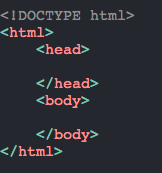
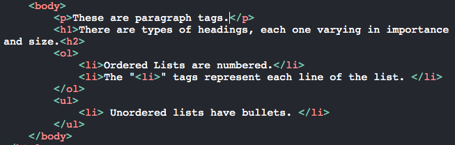

HTML
HTML (Hyper Text Markup Language) is a markup language used to code websites. It utilizes tags that the computer understands. It adds the content (text, images, etc) to the site.
Tags divides webpages into elements. These carry instructions for what to do with the text.
The browser is important too, because the code is telling the browser what to show on the screen.
This language is very simple to use and learn.
Code Examples
This is an example of the structure of the code. All HTML code always starts with "DOCTYPE! html". This lets the browser know what version of HTML you are using.
Next, are the "HTML" tags. Everything inside these tags is going to be HTML, unless a specific tag is written.
Lastly, are the "head" and "body" tags. Everything inside these tags goes into the actual website. Inside the "head" tags is all the code behind the scenes, and everything inside of the "body" tags is all of the text on the screen.
As you can see, inside of the body tags, there are multiple examples of text tags. Each one varies on how they are formatted, how large they will appear, and where they are on the screen. The CSS code can also effect it and style it.
Remember, most tags always have an opening and closing tag. You can differenciate the two by looking if one has a "/" before the name. If it does, that means it's a closing tag. Everything inside of the two tags is being defined by what the tags are. If you didn't include a closing tag, all of the code after your opening tag will be effected!